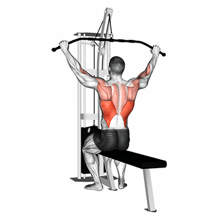
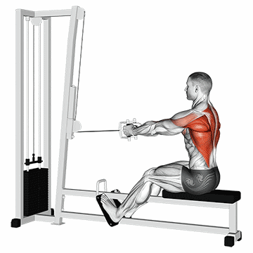
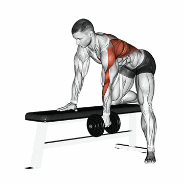
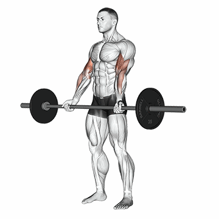
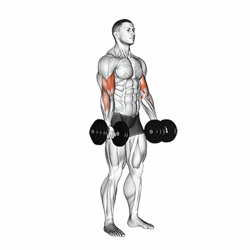
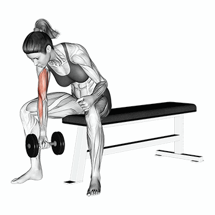

SOBRE O TREINO

O Treino de musculação é um programa de exercícios voltado para o desenvolvimento e fortalecimento dos músculos do corpo.
Ele utiliza pesos, máquinas de musculação e exercícios com o peso corporal para criar resistência e estimular o crescimento muscular.
TREINOS
Peito
O treino de peito é uma parte importante do treinamento de força e musculação, focado no desenvolvimento dos músculos do peitoral maior e peitoral menor. Um treino de peito ajuda a fortalecer os músculos do tórax, melhorar a postura, aumentar a estabilidade dos ombros e proporcionar uma aparência física mais definida.
Flexões

1 - Posicione-se no chão de bruços, com as palmas das mãos apoiadas
no chão na largura dos ombros e os dedos apontados para a frente.
2 - Estenda as pernas
para trás, mantendo os pés juntos, formando uma linha reta da cabeça aos calcanhares.
3 -
Contraia os músculos abdominais e glúteos.
4 -
> Pedro IFPI:
Abaixe lentamente o corpo, dobrando os cotovelos, mantendo-os próximos ao corpo.
5 -
Continue abaixando até que seu peito esteja a poucos centímetros do chão
ou sinta uma leve tensão nos músculos do peito e braços.
6 -
Pause brevemente e, em seguida, empurre o corpo de volta à posição inicial, estendendo os braços completamente.
Supino reto com barra

1 - Deite-se em um banco plano, com os pés apoiados no chão.
Segure a barra com as mãos um pouco mais afastadas do que a largura dos ombros.
2 -
Retire a barra do suporte, mantendo os braços estendidos.
3 -
Abaixe a barra lentamente em direção ao peito, flexionando os cotovelos.
4 -
Pare quando a barra tocar levemente o peito.
6 -
Empurre a barra de volta à posição inicial, estendendo os braços.
7 -
Repita o movimento por várias repetições, mantendo a forma correta e controlada.
Supino reto com halteres

1 - Deite-se em um banco plano, segurando um haltere em cada mão.
Posicione os alteres acima do peito, com os braços estendidos e as palmas das mãos voltadas para a frente.
2 -
Abaixe os alteres lentamente em direção ao peito, flexionando os cotovelos.
3 -
Pare quando os alteres estiverem próximos ao peito.
4 -
Empurre os alteres de volta à posição inicial, estendendo os braços.
5 -
Repita o movimento por várias repetições, mantendo a forma correta e controlada.
6 -
Repita o movimento por várias repetições, mantendo a forma correta e controlada.
Supino inclinado com barra

1 - Posicione-se em um banco inclinado a um ângulo de 30 a 45 graus.
2 -
Pegue a barra com uma pegada ligeiramente mais ampla que a largura
dos ombros, com as palmas das mãos voltadas para a frente.
3 -
Retire a barra dos suportes e posicione-a acima do peito com os braços estendidos.
4 -
Mantendo os ombros recuados e as escápulas puxadas para trás, abaixe lentamente
a barra em direção ao peito, mantendo os cotovelos ligeiramente dobrados.
5 -
Quando a barra estiver próxima ao peito, empurre-a de volta à posição inicial, estendendo os braços.
6 -
Repita o movimento por várias repetições, mantendo a forma adequada e controlando o peso.
Supino inclinado com halteres

1 - Escolha um banco inclinado com um ângulo de inclinação de cerca de 30 a
45 graus.
2 -
Segure um halter em cada mão, com as palmas das mãos voltadas para a frente.
3 -
Deite-se no banco inclinado, com as costas apoiadas e os pés firmemente plantados no chão.
4 -
> Pedro IFPI:
Mantendo os ombros recuados e as escápulas puxadas para trás, empurre os halteres para
cima, estendendo os braços acima do peito.
5 -
Lentamente, abaixe os halteres em direção ao peito, flexionando os cotovelos.
6 -
Continue abaixando os halteres até que fiquem ligeiramente acima do peito, sentindo um alongamento no peitoral.
7 -
Empurre os halteres de volta à posição inicial, estendendo os braços acima do peito,
concentrando-se na contração dos músculos do peitoral e dos ombros.
8 -
Repita o movimento por várias repetições, mantendo a forma adequada e controlando o peso.
Peck Deck

1 - Sente-se no Peck Deck com as costas retas e ajuste a altura
do assento de acordo com a posição dos seus ombros.
2 - Posicione os antebraços e os cotovelos nas almofadas laterais e segure as alças.
3 - Mantendo os pés apoiados no chão e as costas retas, empurre as almofadas juntas à sua frente,
realizando um movimento de abdução dos braços.
4 - Contraia os músculos do peitoral enquanto empurra as almofadas juntas. Segure a posição por
um breve momento para uma contração máxima.
5 - Retorne lentamente à posição inicial, permitindo que os braços se abram novamente, sem exagerar no alongamento.
6 - Repita o movimento por várias repetições, mantendo a forma adequada e controlando a carga.
Costa
Um bom treino de costas oferece para além dos aspectos estéticos, um bom alicerce para o desenvolvimento de outras musculaturas do corpo humano, assim como uma estabilidade central capaz de previnir lesões e de aumentar a performace global do indíviduo nas tarefas do dia-a-dia.
Barra Fixa

Primeiramente você precisa de uma barra que esteja em uma altura suficiente para suspender o corpo. Segure-a com as mãos um pouco além da linha dos ombros, levante os pés do chão e tente juntar as escápulas para ativar os músculos das costas. Fique assim pelo tempo que conseguir e, por fim, solte e pouse devagar.
Puxada com barra no Pulley
Como executar:
1 - Primeiro, sente-se em uma máquina pulley, e ajuste o equipamento conforme a sua altura;
2 - Em seguida, segure a barra com uma pegada aberta, em uma distância maior que a largura dos ombros, com as mãos direcionadas para fora. Uma outra forma de executar o exercícios é segurar a barra na mesma largura dos ombros.
3 - Depois, com os braços estendidos na sua frente, leve o tronco para trás formando um ângulo em torno de 30º, ao mesmo tempo em que cria uma leve curvatura na região lombar e estufa o peito.
4 - Então, exale o ar e traga a barra para baixo, até que ela toque a parte superior do peito. Ao atingir a posição de contração total, comprima os músculos das costas.
5 - Lembre-se que o tronco deve ficar imóvel e somente os braços devem se mexer. O único esforço feito pelos antebraços é o de segurar a barra
6 - Depois, segure a posição contraída por uma segundo, comprimindo as escápulas;
7 - Então, levante a barra lentamente à posição inicial, inalando o ar, até que os braços estejam totalmente estendidos e o latíssimo do dorso completamente alongado.
Puxada pela frente no triangulo Pulley

Como executar:
1 - Para começar, sente-se na máquina com os quadris encaixados no acolchoado do equipamento;
2 - Em seguida, pegue o triângulo com as mãos, que devem estar a uma distância menor do que a largura dos ombros, e as palmas das mãos devem apontar para seu corpo. Além disso, o corpo deve estar na vertical e os braços retos, acima da cabeça.
3 - Então, estufe o peito, faça um pequena curva na região da lombar e leve a carga até o peito, inclinando-se ligeira e suavemente enquanto a puxa. Na parte baixa do movimento, as escápulas devem estar comprimidas.
4 - Depois, volte ao posicionamento original, levantando a carga lentamente.
Remada cavalinho

Como executar:
1 - Para começar, coloque uma carga adequada para você na barra.
2 - Então, se posicione no equipamento, colocando uma perna de cada lado da barra. Abaixe os quadris e segure a alça das barras com as palmas das mãos para fora, mantenha as costas retas durante todo o exercício.
3 - Em seguida, retire o peso do chão e leve a barra até a altura dos braços. O movimento deve ser realizado por meio da flexão dos cotovelos, com as escápulas contraídas e puxando o peso até o peito.
4 - Depois, faça uma pausa rápida na parte alta do exercício e, então, retorne à posição original.
Remada curvada com barra

Como executar:
1 - Para começar, fique em pé, com as pernas afastadas e os joelhos levemente flexionados. Segure uma barra reta com as mãos paralelas aos ombros e com as palmas viradas para a frente.
2 - Em seguida, deixe a coluna reta e encaixe os ombros, incline o tronco para a frente, jogando o quadril para trás. Mantenha os cotovelos estendidos até que a barra fique na altura das coxas, e contraia os bíceps.
3 - Então, puxe a barra até a cintura, ao mesmo tempo em que flexiona os cotovelos.
4 - Depois, segure a contração por um momento e retorne à posição inicial.
Remada maquina de cabos
Como executar:
1 - Primeiro, sente-se na máquina de cabos e prenda o triângulo ou a barra, conforme a sua preferência.
2 - Em seguida, estique os braços para pegar o acessório, puxando-o em direção à parte inferior do peitoral (triângulo) ou superior (barra).
3 - Então, volte com o acessório à posição inicial.
Remada serrote
Como executar:
1 - Para começar, coloque um halter em cada lado de um banco reto.
2 - Em seguida, coloque as pernas em cima do banco, encostando o joelho e incline tronco para a frente até a parte superior do corpo ficar paralela ao chão.
3 - Depois, coloque uma das mãos no banco (a que for correspondente a perna que está no banco) para obter suporte e pegue um halter com a outra mão. Mantenha a região lombar reta e a palma da mão voltada para o tronco.
4 - Então, leve o peso para cima, até a lateral do peito. Flexione o cotovelo e mantenha o tronco imóvel.
> Pedro IFPI:
5 - Durante esse movimento, solte o ar e contraia bem os músculos das costas. Você deve se certificar de que está fazendo força com os músculos das costas e não com o braço. Além disso, os antebraços não devem fazer nenhum esforço, a não ser o de segurar o halter.
6 - Depois, desça o halter e volte à posição inicial, ao mesmo tempo em que inala o ar. Após atingir o número determinado de repetições, troque a posição dos braços.
Bíceps
O treino de bíceps é importante para fortalecer e desenvolver os músculos dos braços. É recomendado variar as técnicas de treinamento, como o número de repetições e séries, ângulos e pegadas, e utilizar técnicas avançadas.
Rosca bíceps direta com barra reta
1 - Fique em pé com os pés afastados na largura dos ombros e
segure a barra reta com as palmas voltadas para cima.
2 -
Mantenha os braços estendidos ao longo do corpo e os cotovelos próximos às laterais.
3 -
Flexione os cotovelos e levante a barra em direção ao peito, contraindo os músculos do bíceps.
4 -
Pause brevemente no topo do movimento, quando a barra
estiver próxima ao peito, para sentir a contração máxima do bíceps.
5 -
Lentamente, abaixe a barra de volta à posição inicial, estendendo os cotovelos e alongando os músculos do bíceps.
6 -
Execute o número desejado de repetições, respeitando sua capacidade e nível de treinamento.
Rosca bíceps direta com barra W

1 - Fique em pé com os pés afastados na largura dos
ombros e segure a barra W com as mãos na largura dos ombros,
palmas voltadas para cima.
2 -
Mantenha os braços estendidos ao longo do corpo, mantendo os cotovelos próximos às laterais.
3 -
Flexione os cotovelos e levante a barra em direção ao peito, contraindo os músculos do bíceps.
4 -
Mantenha os pulsos em uma posição neutra e permita que a barra W siga a curva natural dos braços.
5 -
Pause brevemente no topo do movimento, quando a barra estiver próxima ao peito,
para sentir a contração máxima do bíceps.
6 -
Lentamente, abaixe a barra de volta à posição inicial, estendendo os cotovelos e alongando os músculos do bíceps.
7 -
Execute o número desejado de repetições, respeitando sua capacidade e nível de treinamento.
Rosca bíceps direta com halteres
1 - Para começar, fique em pé e pegue um halter com cada mão.
2 -
Os cotovelos devem estar próximos ao tronco e as palmas das mãos direcionadas
para a frente.
3 -
Então, com os antebraços imóveis, solte o ar e levante os pesos ao mesmo tempo em que contrai os bíceps.
4 -
Isso deve ser feito até que os bíceps estejam completamente contraídos e os halteres se encontrem na altura dos ombros.
5 -
Em seguida, permaneça na posição contraída por um instante.
6 -
Depois, inspire o ar e retorne lentamente ao posicionamento original.
Rosca bíceps martelo com halteres

1 - Primeiro, pegue um halter em cada mão e permaneça
com os braços estendidos ao lado do corpo.
2 -
As palmas das mãos devem ficar voltadas para dentro.
3 -
Então, sem mexer os antebraços, você deve dobrar os cotovelos e levar os halteres
para o mais próximo dos ombros que conseguir.
4 -
Em seguida, faça uma p
ausa e lentamente retorne à posição original, estendendo bem os braços.
Rosca bíceps no cabo e usando a corda

1 - Primeiro, fique em pé, de maneira ereta e com a coluna vertebral reta.
2 -
Pegue as extremidades da corta com as palmas das mãos apontadas para
o centro e deixe os braços estendidos.
3 -
Então, faça o movimento de levantamento flexionando os cotovelos.
4 -
Depois, retorne o movimento à posição inicial
Rosca bíceps apoiado no banco Scott com barra W

1 - Primeiro, sente-se no banco Scott e segure a barra na parte
estreita e interna de seu cabo.
2 -
Para pegar corretamente, recomenda-se que alguém
dê a barra para você, ou que você a pegue do suporte para barras que
os bancos Scott costumam ter.
3 -
Ao segurar a barra, as palmas das mãos devem apontar para a frente e levemente inclinadas para dentro,
devido ao formato da barra. Os antebraços e o peito devem estar posicionados contra a parte acolchoada,
segurando a barra na altura dos ombros.
4 -
Então, enquanto inspira, abaixe a barra até que o antebraço esteja estendido e o bíceps completamente alongado.
5 -
Depois, ao exalar o ar, utilize o bíceps para subir a barra até que ele esteja totalmente
contraído e a barra se encontre na altura dos ombros.
6 -
Então, contraia bem os bíceps, permaneça nessa posição por um instante e volte ao posicionamento original.
7 -
Depois, retorne o movimento à posição inicial.
Rosca bíceps concentrada unilateral com halter
1 - Primeiro, sente-se na ponta de um banco com as pernas afastadas
e segure um halter em uma das mãos,
os joelhos devem estar flexionados e os pés firmes no chão.
2 -
O cotovelo da mão que segura o peso deve ser apoiado na parte interna da coxa,
que fica perto do joelho, e estar estendido.
3 -
A pegada é com a mão virada em direção à outra coxa,
enquanto isso, a mão livre deve ser apoiada na outra coxa para ajudar a dar estabilidade ao corpo.
4 -
Depois, eleve o halter, fazendo o movimento de flexão do cotovelo, até que a carga se aproxime do ombro.
5 -
Toda a força deve ficar concentrada no bíceps,
segure a contração por alguns instantes, então, desça o halter de modo controlado e retorne à posição original.
6 -
É importante não mexer o corpo durante o exercício, somente o antebraço é que deve se movimentar.
Tríceps
Um bom treino de costas oferece para além dos aspectos estéticos, um bom alicerce para o desenvolvimento de outras musculaturas do corpo humano, assim como uma estabilidade central capaz de previnir lesões e de aumentar a performace global do indíviduo nas tarefas do dia-a-dia.
Barra Fixa
Primeiramente você precisa de uma barra que esteja em uma altura suficiente para suspender o corpo. Segure-a com as mãos um pouco além da linha dos ombros, levante os pés do chão e tente juntar as escápulas para ativar os músculos das costas. Fique assim pelo tempo que conseguir e, por fim, solte e pouse devagar.
Puxada com barra no Pulley
Como executar:
1 - Primeiro, sente-se em uma máquina pulley, e ajuste o equipamento conforme a sua altura;
2 - Em seguida, segure a barra com uma pegada aberta, em uma distância maior que a largura dos ombros, com as mãos direcionadas para fora. Uma outra forma de executar o exercícios é segurar a barra na mesma largura dos ombros.
3 - Depois, com os braços estendidos na sua frente, leve o tronco para trás formando um ângulo em torno de 30º, ao mesmo tempo em que cria uma leve curvatura na região lombar e estufa o peito.
4 - Então, exale o ar e traga a barra para baixo, até que ela toque a parte superior do peito. Ao atingir a posição de contração total, comprima os músculos das costas.
5 - Lembre-se que o tronco deve ficar imóvel e somente os braços devem se mexer. O único esforço feito pelos antebraços é o de segurar a barra
6 - Depois, segure a posição contraída por uma segundo, comprimindo as escápulas;
7 - Então, levante a barra lentamente à posição inicial, inalando o ar, até que os braços estejam totalmente estendidos e o latíssimo do dorso completamente alongado.